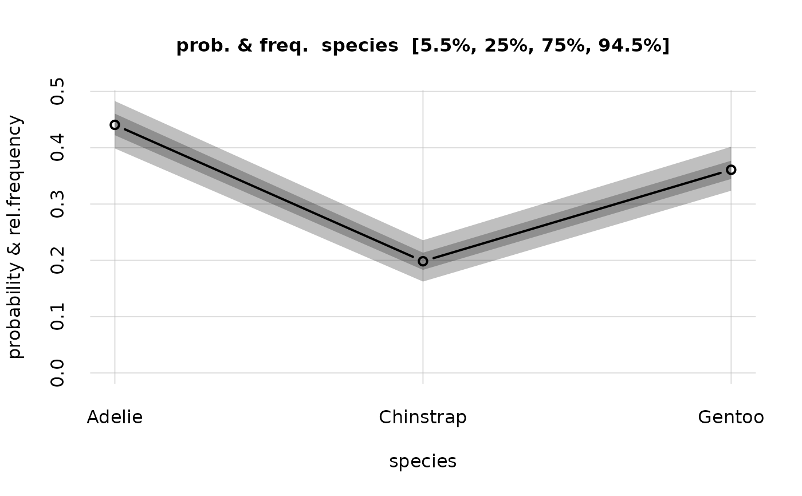
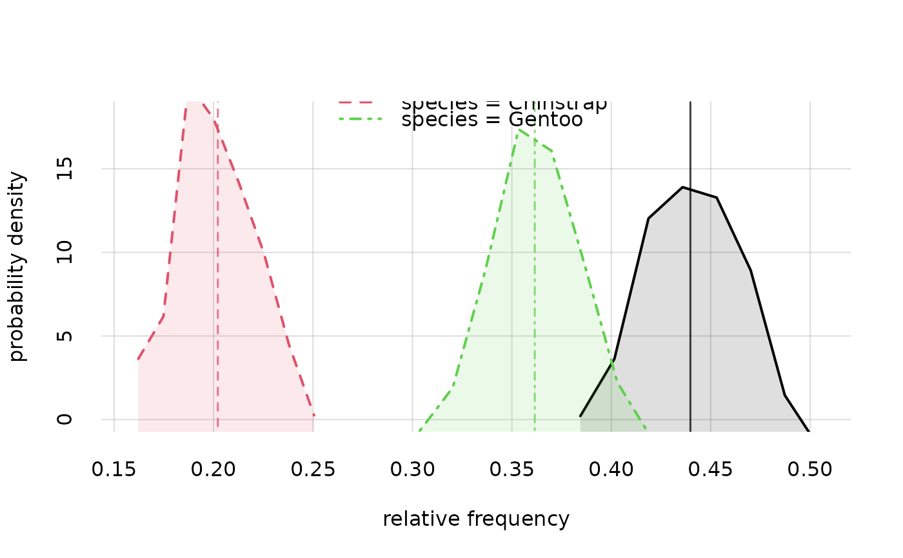
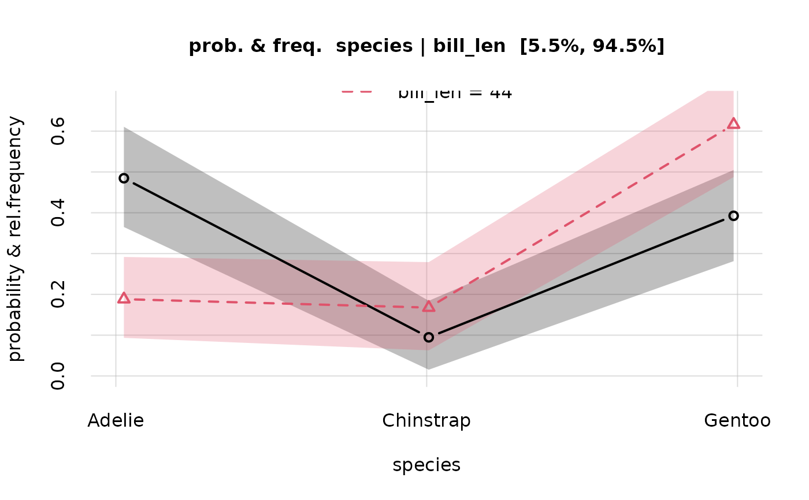

This function calculates the posterior probability \(\mathrm{Pr}(Y = y \vert X = x, \text{data})\), where \(Y = y\) and \(X = x\) are two (non overlapping) sets of joint variate values, inputted as data frame arguments Y and X. If X is omitted or NULL, then the posterior probability \(\mathrm{Pr}(Y = y \vert \text{data})\) is calculated.
Usage
Pr(
Y,
X = NULL,
learnt,
tails = NULL,
priorY = NULL,
nsamples = "all",
quantiles = c(0.055, 0.25, 0.75, 0.945),
parallel = TRUE,
sep = ",",
solidus = "|",
silent = FALSE,
keepYX = TRUE
)Arguments
- Y
Matrix or data.table: set of values of variates of which we want the joint probability of. One variate per column, one set of values per row.
- X
Matrix or data.table or
NULL(default): set of values of variates on which we want to condition the joint probability ofY. IfNULL, no conditioning is made (except for conditioning on the learning dataset and prior assumptions). One variate per column, one set of values per row.- learnt
Either a character with the name of a directory or full path for a 'learnt.rds' object, produced by the
learn()function, or such an object itself.- tails
Named vector or list, or
NULL(default). The names must match some or all of the variates in argumentsYandX. For variates in this list, the probability arguments are understood in an semi-open interval sense: \(Y \le y\) or \(Y \ge y\), an so on. This is true forYandXvariates (on the left and on the right of the conditional sign \(\,\vert\,\)). A left-open interval \(Y \le y\) is indicated by'<='or'left'or-1; a right-open interval \(Y \ge y\) is indicated by'>='or'right'or+1. ValuesNULL,'==',0indicate that a point valueY = y(not an interval) should be calculated. NB: the semi-open intervals always include the given value; this is important for ordinal or rounded variates. For instance, if \(Y\) is an integer variate, then to calculate \(\mathrm{Pr}(Y < 3)\) you should require \(\mathrm{Pr}(Y \le 2)\); for this reason we also have that \(\mathrm{Pr}(Y \le 2)\) and \(\mathrm{Pr}(Y \ge 2)\) generally add up to more than 1.- priorY
Numeric vector with the same length as the rows of
Y, orTRUE, orNULL(default): prior probabilities or base rates for theYvalues. IfTRUE, the prior probabilities are assumed to be all equal.- nsamples
Integer or
NULLor'all'(default): desired number of samples of the variability of the probability forY. IfNULL, no samples are reported. If'all'(orInf), all samples obtained by thelearn()function are used.- quantiles
Numeric vector, between 0 and 1, or
NULL: desired quantiles of the variability of the probability forY. Defaultc(0.055, 0.25, 0.75, 0.945), that is, the 5.5%, 25%, 75%, 94.5% quantiles. These are typical quantile values in the Bayesian literature: they give 50% and 89% credibility intervals, which correspond to 1 shannons and 0.5 shannons of uncertainty (see doi:10.5281/zenodo.17072199). IfNULL, no quantiles are calculated.- parallel
Logical or positive integer or cluster object.
TRUE(default): use roughly half of available cores;FALSE: use serial computation; integer: use this many cores. It can also be a cluster object previously created withparallel::makeCluster(); in this case the parallel computation will use this object.- sep
character, default
',': character to separate variate names and values- solidus
character, default
'|': character prepended to names of the variates in the conditional (typically theXvariates).- silent
Logical, default
FALSE: give warnings or updates in the computation?- keepYX
Logical, default
TRUE: keep a copy of theYandXarguments in the output? This is used for the plot method.
Value
A list of class probability, consisting of the following elements:
values: a matrix with the probabilities \(\mathrm{Pr}(Y = y \vert X = x, \text{data})\), for all joint values \(y\) of the \(Y\)-variates (rows) and all joint values \(x\) of the \(X\)-variates (columns).quantiles(possiblyNULL): an array with the variability quantiles (3rd dimension of the array) for such probabilities.samples(possiblyNULL): an array with the variability samples (3rd dimension of the array) for such probabilities.values.MCaccuracy,quantiles.MCaccuracy: arrays with the numerical accuracies (roughly speaking a standard deviation) of the Monte Carlo calculations for thevaluesandquantileselements.Y,X: copies of theYandXarguments.
Details
The function also gives quantiles about the possible variability of the probability \(\mathrm{Pr}(Y = y \vert X = x, \text{new\,data}, \text{data})\) that we could have if more learning data were provided, as well as a number of samples of the possible values of such probability.
If several joint values are given for Y or X, the function will create a 2D grid of results for all possible combinations of the given Y and X values.
This function also allows for base-rate or other prior-probability corrections: If a prior (for instance, a base rate) for Y is given, the function will calculate the probability \(\mathrm{Pr}(Y = y \vert X = x, \text{data}, \text{prior})\) from \(\mathrm{Pr}(X = x \vert Y = y, \text{data})\) and the prior, by means of Bayes's theorem.
Each variate in each argument Y, X can be specified either as a point-value \(Y = y\) or as a left-open interval \(Y \le y\) or as a right-open interval \(Y \ge y\), through the argument tails.
See vignette('intro') for example uses.
References
Lindley, Novick (1981): The role of exchangeability in inference, doi:10.1214/aos/1176345331.
Bernardo, Smith (2000): Bayesian Theory. Wiley doi:10.1002/9780470316870.
Jaynes (2003): Probability Theory: The Logic of Science. Cambridge University Press doi:10.1017/CBO9780511790423.
MacKay (2005): Information Theory, Inference, and Learning Algorithms. Cambridge University Press https://www.inference.org.uk/itila/book.html.
Porta Mana (2025): What's special about 89% credibility intervals? doi:10.5281/zenodo.17072199.
See also
learn(), which generates the learnt objects required by Pr().
plot.probability() to plot probabilities and quantiles calculated by Pr().
hist.probability() to plot histograms of the probability distributions calculated by Pr().
print.probability() to print the main elements of the probabilities calculated by Pr().
qPr() to calculate quantiles for a specific variate, that is, the variate values having given probabilities.
rPr() to generate datapoints.
Examples
## Load the example `learnt` object calculated from the "penguins" dataset;
## variates: 'species' and 'bill_len'
learnt <- learntExample
## ## Example 1:
## Calculate the probability that an unknown penguin from this population
## is of species 'Adelie'
probs <- Pr(
Y = data.frame(species = 'Adelie'),
learnt = learnt, parallel = 1
)
#> Registered socket cluster with 1 nodes on host ‘localhost’.
#> Closing connections to cores.
## display the probability value
probs$values
#>
#> species [,1]
#> Adelie 0.440685
## the full-population frequency of 'Adelie' penguins is unknown;
## display the 5.5%- and 94.5%-probability values
## for such frequency
probs$quantiles[, , c('5.5%', '94.5%')]
#> 5.5% 94.5%
#> 0.3988210 0.4829919
## we can also plot the probability distribution for this full-population frequency
hist(probs, legend = 'topright')
 ## ## Example 2:
## Calculate the 3 probabilities that an unknown penguin from this population
## is of species 'Adelie', 'Chinstrap', 'Gentoo'
probs <- Pr(
Y = data.frame(species = c('Adelie', 'Chinstrap', 'Gentoo')),
learnt = learnt, parallel = 1
)
#> Registered socket cluster with 1 nodes on host ‘localhost’.
#> Closing connections to cores.
## display the 3 probability values
probs$values
#>
#> species [,1]
#> Adelie 0.4406850
#> Chinstrap 0.1984161
#> Gentoo 0.3608989
## the full-population frequencies of the three species are unknown;
## display the 5.5%- and 94.5%-probability values
## for such frequencies
probs$quantiles[, , c('5.5%', '94.5%')]
#> Q
#> species 5.5% 94.5%
#> Adelie 0.3988210 0.4829919
#> Chinstrap 0.1623616 0.2357522
#> Gentoo 0.3237028 0.4017671
## plot the probabilities and quantiles
plot(probs)
## ## Example 2:
## Calculate the 3 probabilities that an unknown penguin from this population
## is of species 'Adelie', 'Chinstrap', 'Gentoo'
probs <- Pr(
Y = data.frame(species = c('Adelie', 'Chinstrap', 'Gentoo')),
learnt = learnt, parallel = 1
)
#> Registered socket cluster with 1 nodes on host ‘localhost’.
#> Closing connections to cores.
## display the 3 probability values
probs$values
#>
#> species [,1]
#> Adelie 0.4406850
#> Chinstrap 0.1984161
#> Gentoo 0.3608989
## the full-population frequencies of the three species are unknown;
## display the 5.5%- and 94.5%-probability values
## for such frequencies
probs$quantiles[, , c('5.5%', '94.5%')]
#> Q
#> species 5.5% 94.5%
#> Adelie 0.3988210 0.4829919
#> Chinstrap 0.1623616 0.2357522
#> Gentoo 0.3237028 0.4017671
## plot the probabilities and quantiles
plot(probs)

## plot the probability distribution for the full-population frequency
## of each species
hist(probs)

## ## Example 3:
## Calculate the probability that an unknown penguin is of species 'Adelie'
## GIVEN that its bill length is 43 mm
probs <- Pr(
Y = data.frame(species = 'Adelie'),
X = data.frame(bill_len = 43),
learnt = learnt, parallel = 1
)
#> Registered socket cluster with 1 nodes on host ‘localhost’.
#> Closing connections to cores.
## display the probability value
probs$values
#> |bill_len
#> species 43
#> Adelie 0.4647433
## the full-subpopulation frequency of 'Adelie' penguins,
## among penguins having bill length of 43 mm, is unknown;
## display the 5.5%- and 94.5%-probability values
## for such conditional frequency
probs$quantiles[, , c('5.5%', '94.5%')]
#> 5.5% 94.5%
#> 0.3669249 0.5678666
## ## Example 4:
## Calculate the probability that
## an unknown penguin is of species 'Adelie' AND its bill length is 43 mm
probs <- Pr(
Y = data.frame(species = 'Adelie', bill_len = 43),
learnt = learnt, parallel = 1
)
#> Registered socket cluster with 1 nodes on host ‘localhost’.
#> Closing connections to cores.
## display the probability value
probs$values
#>
#> species,bill_len [,1]
#> Adelie,43 0.001819114
## display the 5.5%- and 94.5%-probability values
## for the full-population frequency of 'Adelie' penguins with 43 mm bills
probs$quantiles[, , c('5.5%', '94.5%')]
#> 5.5% 94.5%
#> 0.001245039 0.002371801
## ## Example 5:
## Calculate the 3 x 2 probabilities for the 3 species
## GIVEN bill-lengths of 43 mm and 44 mm
Y <- data.frame(species = c('Adelie', 'Chinstrap', 'Gentoo'))
X <- data.frame(bill_len = c(43, 44))
probs <- Pr(Y = Y, X = X, learnt = learnt, parallel = 1)
#> Registered socket cluster with 1 nodes on host ‘localhost’.
#> Closing connections to cores.
## display the 3 x 2 probability values
probs$values
#> |bill_len
#> species 43 44
#> Adelie 0.4647433 0.2223224
#> Chinstrap 0.1458345 0.2054491
#> Gentoo 0.3894222 0.5722285
## display the 5.5%- and 94.5%-probability values
## for the full-population joint frequencies
probs$quantiles[, , c('5.5%', '94.5%')]
#> , , Q = 5.5%
#>
#> |bill_len
#> species 43 44
#> Adelie 0.36692485 0.1447719
#> Chinstrap 0.08096214 0.1197566
#> Gentoo 0.29852092 0.4671262
#>
#> , , Q = 94.5%
#>
#> |bill_len
#> species 43 44
#> Adelie 0.5678666 0.3069388
#> Chinstrap 0.2190872 0.2965559
#> Gentoo 0.4811995 0.6718201
#>
## plot the probabilities and quantiles
plot(probs)

## ## Example 6:
## Calculate the 3 x 2 joint probabilities for the 3 species
## AND bill-lengths of 43 mm and 44 mm
Y <- expand.grid(
species = c('Adelie', 'Chinstrap', 'Gentoo'),
bill_len = c(43, 44)
)
probs <- Pr(Y = Y, learnt = learnt, parallel = 1)
#> Registered socket cluster with 1 nodes on host ‘localhost’.
#> Closing connections to cores.
## display the 6 joint-probability values
probs$values
#>
#> species,bill_len [,1]
#> Adelie,43 0.0018191137
#> Chinstrap,43 0.0005712174
#> Gentoo,43 0.0015231253
#> Adelie,44 0.0009554396
#> Chinstrap,44 0.0008826070
#> Gentoo,44 0.0024593339
## display the 5.5%- and 94.5%-probability values
## for the full-population joint frequencies
probs$quantiles[, , c('5.5%', '94.5%')]
#> Q
#> species,bill_len 5.5% 94.5%
#> Adelie,43 0.0012450391 0.002371801
#> Chinstrap,43 0.0003027243 0.000897585
#> Gentoo,43 0.0010682562 0.002025675
#> Adelie,44 0.0005600381 0.001361621
#> Chinstrap,44 0.0004820964 0.001288832
#> Gentoo,44 0.0017899847 0.003151722